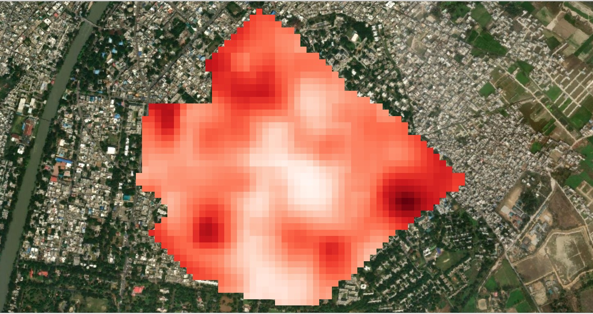
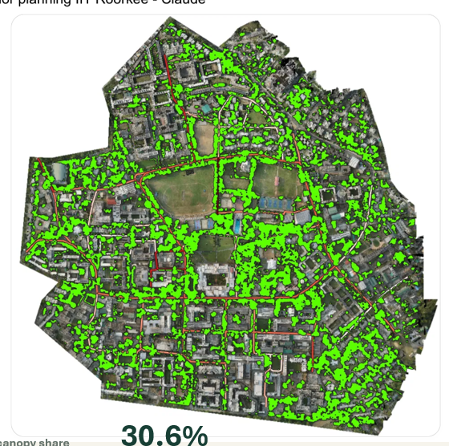
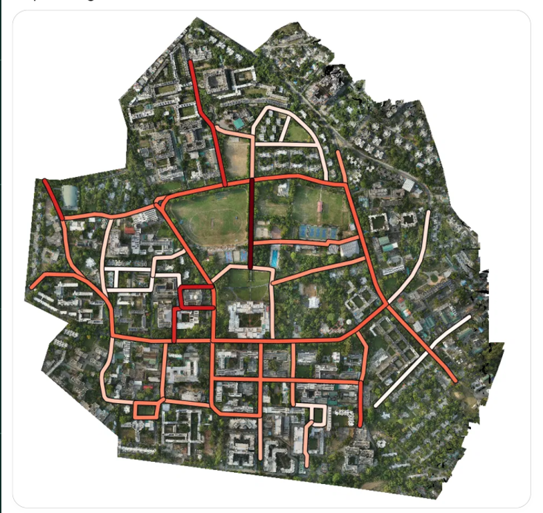

Identifying road sections for additional tree plantation through geospatial analysis of land surface temperature, existing tree canopy and road usage.
Indian Institute of Technology Roorkee
Creating cooler and healthier urban environments.
Increasing urbanisation and road development can reduce green spaces and increase thermal discomfort. Green corridors can help create healthier and more comfortable urban streets.
High land surface temperatures can make roads and surrounding areas uncomfortable for pedestrians.
Roads with limited tree canopy may lack natural shade and require additional plantation.
Frequently used roads need suitable greenery to improve the surrounding walking environment.
Tree-lined roads can provide shade and help create a more comfortable space for pedestrians.
To identify suitable road sections for green corridor development by analysing land surface temperature, existing tree canopy coverage and road usage.
Three important spatial indicators are used to identify potential locations for additional tree plantation and green corridor development.

alt="Land Surface Temperature map"> 01Identifies relatively warmer areas. Road sections with high surface temperatures may need additional vegetation.

02Shows existing tree cover and helps identify road sections where natural shade is limited.

alt="Road usage map"> 03Highlights important and frequently used roads where additional greenery may benefit more road users.
Combining the three indicators helps identify road sections that should receive higher priority for additional tree plantation.
Road sections with high LST indicate relatively warmer surroundings and may benefit from additional vegetation.
Roads with insufficient existing tree cover may lack natural shade for pedestrians.
Frequently used roads are important locations to consider because more road users may benefit from shade.
Roads with high LST, low tree canopy and high usage should be considered for higher plantation priority.
High LST + Low Canopy + High Road Usage
Two of the three indicators show a need for intervention.
Lower heat stress or adequate existing tree cover.
These are suggested screening categories. Final priority should be determined using measured values, selected weights and field verification.
Priority should be given to road sections where land surface temperature is high, existing tree canopy is low and road usage is high. These locations may be suitable for additional tree plantation and green corridor development.
The proposed plantation locations should also be checked for available roadside space, underground utilities, visibility, pedestrian movement and road safety.